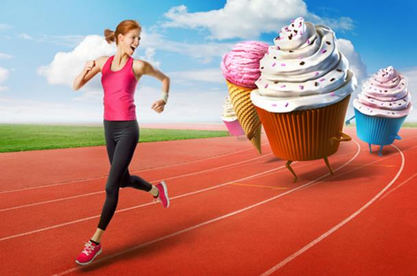

<!-- We don't need full layout here, because this page will be parsed with Ajax-->
<!-- Top Navbar-->

<div class="pages">
  <!-- Page, data-page contains page name-->
  <div data-page="about" class="page">
    <!-- Scrollable page content-->
    <div class="page-content">
      <div class="navbar">
  <div class="navbar-inner">
    <div class="left"><a href="#" class="back link"> <i class="icon icon-back"></i><span>العوده </span></a></div>
    <div class="center sliding">   </div>
    <div class="right">
       
      <!-- Right link contains only icon - additional "icon-only" class--><a href="#" class="link icon-only open-panel"> <i class="icon icon-bars"></i></a>
    </div>
  </div>
</div>
      <div class="content-block presentcon">
<div class="row">
  <div class="col-100">

  </div>
</div>

<div class="row t">
  <div class="col-100">
<h4>5 مشروبات احذرها لتنجح في خسارة الوزن :</h4>
 <h4>المشروبات الغازية منزوعة السكر</h4>
 ربما تبدو هذه المشروبات كخيار أفضل صحياً عندما تتطلع لتقليل السعرات الحرارية التي تتناولها، ولكن تناول هذه المشروبات من شأنه أن يضرك أكثر مما ينفعك.

بحسب العلماء، المشروبات الخالية من السعرات الحرارية مثل كوكاكولا وسبرايت الخالية من السكر من شأنها أن تزيد من الجوع والرغبة في تناول الطعام.

وكشفت النتائج التي نشرتها الدورية العالمية للسمنة أنه بينما كان يجب أن يخسر من يتناولون هذا النوع من المشروبات البديلة الوزن بعد تجنبهم للمشروبات السكرية، فقد عوضوا هذا الفارق في السعرات خلال وجبة الغذاء.

<h4>العصائر</h4>
تحتوي العصائر -وخاصة عصائر الفاكهة- على نسب كبيرة من السكر. وبحسب موقع Women's Health، يحتوي كأس واحد من عصير العنب على ما يعادل 9 ملاعق من السكر، بينما يحتوي كأس من عصير البرتقال على 6 ملاعق، وكأس من عصير التفاح على 7 ملاعق.

وقال ديفيد لودويج، الأستاذ بكلية الطب بجامعة هارفارد في تصريح لـ Women's Health إن شرب العصائر يتسبب في إرتفاع نسبة السكر في الدم، وعندما تنخفض النسبة من جديد، تجد أنك ترغب في تناول المزيد من السكريات والكربوهيدرات.

تحتوي عصائر الفاكهة أيضاً على القليل من الألياف، لذا يعد من الأفضل تناول الفاكهة في صورتها الطبيعية بدلاً من عصرها.

<h4>القهوة</h4>
لا يمكنك العمل بدون كوب من الموكا في الصباح؟ ربما تصبح أقل ميلاً للذهاب لمحل القهوة في مدينتك عندما تعرف بأن الموكا، المصنوعة من الحليب المقشود تحتوي على 220 سعراً حرارياً.

عندما يتعلق الأمر بالقهوة، فكلما قلت الكمية التي تتناولها كان أفضل. إذا كنت تحاول خسارة الوزن، التزم بتناول القهوة السوداء مع قليل من الحليب وبدون سكر، كما عليك أن تعرف أن إضافة طبقة الكريم والشوكولاتة لكوب القهوة هي طريقة مؤكدة لإفساد حميتك الغذائية.

<h4>الحليب خالي الدسم</h4>
بحسب Women's Health، يمكن أن يؤدي الحليب منزوع الدسم إلى زيادة في الوزن بمرور الوقت.

يقول الدكتور لودويج "أظهرت البحوث القائمة على الملاحظة باستمرار أن من يستهلكون الألبان الخالية من الدهون أو 1% منها يميلون إلى اكتساب الوزن أكثر مع مرور الوقت من أولئك الذين يستهلكون الحليب الطبيعي".

من الأفضل أيضاً تجنب بدائل الحليب، التي يمكن أن تحتوي على نسب أكبر من السكر.

عندما يتعلق الأمر بالألبان، اختر الحليب كامل الدسم الغني بالكالسيوم، أو كبديل له، يمكن تناول حليب الجوز، والذي يحتوي على سعر وسكر أقل.

<h4>الشاي المثلج</h4>
تماماً مثل عصير الفاكهة، الشاي المثلج الذي يتم بيعه في المتاجر يحتوي على السكر. وتحتوي زجاجة من الشاي المثلج المحلاة تقريباً 116 سعرة حرارية، بحسب تقرير نشره موقعWebMB.

لذلك، من الأفضل أن تصنع الشاي المثلج بنفسك، دون أن تضيف السكر.
<h4>المرطبات</h4>
إذا كنت تعد المرطبات في المنزل كالمليك شيك والكوكتيل والعصائر الكثيفة. كن حذراً، فبينما تبدو طريقة جيدة لتناول الفاكهة، إلا أن تناول كميات كبيرة منها في المرة الواحدة ليست الطريقة الأفضل، بحسب Women's Health.

بدلاً من ذلك، اختر المكونات بعناية من خلال وضع حبة واحدة من الفاكهة، مع مكونات أخرى مثل الأفوكادو والزبادي اليوناني.
  </div>
</div>
   </div>
    </div>
  </div>
</div>